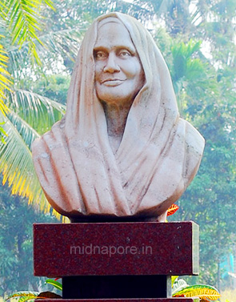

}

Acknowledging The Unsung Heroes Of India
who are unsung heroes?
An unsung hero is a person who has done something heroic but is not widely recognized for the effort. In olden days, poets wrote
epics to tell the story of heroes. This was sometimes called “singing the praises” of the heroes, because poems could be turned
into songs or ballads. People who had done heroic deeds became famous through the poems or the songs.
An unsung hero, by contrast, doesn’t get much attention. Often people talk about fire fighters, police officers, or rescue
workers as unsung heroes. They save people’s lives and carry out brave feats, but it’s just part of their job, and they don’t get
any special attention for it.
click on any below to learn more about unsung heroes!
 < < |
 |
|
|